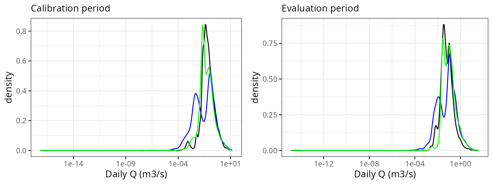

Evaluation of watershed-level runoff against river gauge data
Miquel De Cáceres / María González
2026-11-20
Source:vignettes/evaluation/WatershedLevelEvaluation.Rmd
WatershedLevelEvaluation.RmdIntroduction
Goal
The aim of this article is to provide an assessment of the predictive
performance of spwb_land() and growth_land()
for the prediction of watershed outflow. To this aim, we simulate
hydrological processes in a set of benchmark watersheds and compare the
model predictions of watershed outflow against measurements obtained
using river gauges at watershed outlets. Simulations are performed after
calibrating watershed-level hydrological parameters with a subset of
observations. The vignette also includes estimates of computation time
for each watershed under different models and control parameters.
Calibration and simulation
For each watershed, the following procedure has been conducted:
- Initial warm-up simulation with default parameters for a specified number of years, aimed to fill the aquifer and equilibrate soils.
- Calibration of watershed parameters for a specific period (warm-up +
analysis) using a genetic algorithm and Kling–Gupta efficiency (KGE) as
optimization function. Calibration is conducted with the same function
(either
spwb_land()orgrowth_land()to be used in evaluation). - Simulation with calibrated watershed parameters for the whole period, that includes both the calibration period and a later period used for independent evaluation.
Both in the calibration procedure and the final simulations with calibrated parameters, the vegetation input has been aggregated into size classes, for computational simplicity.
Evaluation
For each watershed, simulation results are compared to observed watershed outflow, differentiating between the period used for calibration and a posterior period used for independent evaluation.
Time series
A comparison of observed vs. simulated (with spwb_land()
or growth_land()) time series is shown, at the daily and
monthly scales.
Goodness-of-fit statistics
The following goodness of fit statistics are calculated using package
hydroGOF:
- Nash-Sutcliffe Efficiency (NSE): This coefficient is sensitive to extreme values and might yield sub-optimal results when the dataset contains large outliers.
- Kling–Gupta efficiency (KGE): Provides a decomposition of the Nash-Sutcliffe efficiency, which facilitates the analysis of the importance of different components (bias, correlation and variability).
- Index of agreement (d): Initially proposed by Willmott (1981) to overcome the drawbacks of the R2, such as the differences in observed and predicted means and variances (Legates and McCabe, 1999). d is also dimensionless and bounded between 0 and 1 and can be interpreted similarly to R2.
- Volumetric efficiency index (VE): Originally proposed by Criss and Winston (2008) to circumvent some of the NSE flaws. VE values are also bounded [0, 1] and represent the fraction of water delivered at the proper time.
- Root mean squared error (RMSE): The usual estimation of average model error (i.e. the square root of mean squared errors).
Hydrological analysis
The density distribution and percentiles of daily discharge are compared between observations and predictions, for both the calibration and evaluation periods.
Computation times
For each watershed, we provide a table of computation times in
seconds corresponding to 30-day simulations of watershed processes, with
either spwb_land() or growth_land(). Different
combinations of control parameters are tested for
transpirationMode (either Granier or Sureau),
rhizosphereOverlap (either total or partial) or
soilDomains (either single or dual). Different degrees of
vegetation detail are also tested: (a) tree-level original inventory
records; (b) aggregation of trees and shrubs into size classes; (c)
simplification to the dominant tree/shrub species.
Calibrated watershed parameters
The following table contains the period of calibration and the set of
TETIS parameters resulting from calibration exercises with either
spwb_land() or growth_land():
| medfateland | medfate | model | watershed | local_model | Calibration_start | Calibration_end | R_localflow | R_interflow | R_baseflow | n_interflow | n_baseflow | n_manning | num_daily_substeps | rock_max_infiltration | deep_aquifer_loss |
|---|---|---|---|---|---|---|---|---|---|---|---|---|---|---|---|
| 3.0.1 | 5.2.1 | tetis | aiguadora | growth | 2000-08-22 | 2010-08-22 | 3.6159824 | 3.832074 | 0.312165 | 0.0816264 | 1.8170505 | 0.0906169 | 24 | 10 | 4.3222517 |
| 3.0.1 | 5.2.1 | tetis | aiguadora | spwb | 2000-08-22 | 2010-08-22 | 0.3695427 | 1.995859 | 2.335199 | 0.0980868 | 0.8831705 | 0.0332626 | 24 | 10 | 3.4474143 |
| 3.0.1 | 5.2.1 | tetis | siurana | growth | 2000-01-01 | 2009-12-31 | 0.5011519 | 4.080921 | 3.678624 | 0.0480280 | 1.4437293 | 0.0709350 | 24 | 10 | 1.4499759 |
| 3.0.1 | 5.2.1 | tetis | siurana | spwb | 2000-01-01 | 2009-12-31 | 0.5641670 | 4.838113 | 2.429330 | 0.0212023 | 1.7348234 | 0.0251805 | 24 | 10 | 0.8616281 |
Evaluation results
AIGUADORA watershed with TETIS and version 3.0.1
Goodness-of-fit
| Scale | Period | Local.model | NSE | KGE | d | VE | RMSE |
|---|---|---|---|---|---|---|---|
| Daily | Calibration | spwb | 0.606 | 0.801 | 0.730 | 0.508 | 0.517 |
| Daily | Calibration | growth | 0.545 | 0.770 | 0.696 | 0.446 | 0.556 |
| Daily | Evaluation | spwb | -0.558 | 0.304 | 0.489 | 0.149 | 0.845 |
| Daily | Evaluation | growth | -0.525 | 0.293 | 0.474 | 0.124 | 0.836 |
| Monthly | Calibration | spwb | 0.722 | 0.789 | 0.761 | 0.612 | 0.280 |
| Monthly | Calibration | growth | 0.683 | 0.831 | 0.737 | 0.573 | 0.299 |
| Monthly | Evaluation | spwb | 0.188 | 0.477 | 0.548 | 0.357 | 0.422 |
| Monthly | Evaluation | growth | 0.130 | 0.468 | 0.555 | 0.367 | 0.437 |
Hydrological analysis (daily scale)
Density distribution

Percentiles
| Observed.calibration | spwb.calibration | growth.calibration | Observed.Evaluation | spwb.Evaluation | growth.Evaluation | |
|---|---|---|---|---|---|---|
| 1% | 0.0300 | 0.02789 | 0.00000 | 0.0600 | 0.05877 | 0.00000 |
| 5% | 0.0500 | 0.04342 | 0.00000 | 0.0700 | 0.09634 | 0.00000 |
| 10% | 0.0600 | 0.07847 | 0.00061 | 0.0900 | 0.13814 | 0.00912 |
| 15% | 0.0800 | 0.10964 | 0.01217 | 0.1000 | 0.17118 | 0.01572 |
| 25% | 0.1000 | 0.17045 | 0.03068 | 0.1300 | 0.21674 | 0.04417 |
| 50% | 0.2600 | 0.28925 | 0.26758 | 0.2700 | 0.32096 | 0.32848 |
| 75% | 0.5700 | 0.55599 | 0.61639 | 0.5400 | 0.63777 | 0.67359 |
| 85% | 0.9300 | 0.87896 | 0.92983 | 0.8500 | 0.97909 | 1.02191 |
| 90% | 1.2400 | 1.16132 | 1.28442 | 1.1700 | 1.29088 | 1.39332 |
| 95% | 1.8500 | 1.86324 | 2.06505 | 1.7660 | 2.02002 | 2.37650 |
| 99% | 3.7998 | 4.01228 | 3.95803 | 3.3616 | 4.85995 | 4.50680 |
Computation times
| medfateland_ver | medfate_ver | watershed | model | transpirationMode | soilDomains | rhizosphereOverlap | input | days | Elapsed_time_sec |
|---|---|---|---|---|---|---|---|---|---|
| 3.0.1 | 5.2.1 | aiguadora | spwb | Granier | single | total | dominant species | 30 | 8.415 |
| 3.0.1 | 5.2.1 | aiguadora | spwb | Granier | dual | total | dominant species | 30 | 7.896 |
| 3.0.1 | 5.2.1 | aiguadora | spwb | Granier | single | total | size classes | 30 | 8.326 |
| 3.0.1 | 5.2.1 | aiguadora | spwb | Granier | dual | total | size classes | 30 | 8.383 |
| 3.0.1 | 5.2.1 | aiguadora | spwb | Granier | single | total | original inventory | 30 | 9.386 |
| 3.0.1 | 5.2.1 | aiguadora | spwb | Granier | dual | total | original inventory | 30 | 9.390 |
| 3.0.1 | 5.2.1 | aiguadora | spwb | Granier | single | partial | dominant species | 30 | 8.703 |
| 3.0.1 | 5.2.1 | aiguadora | spwb | Granier | dual | partial | dominant species | 30 | 9.312 |
| 3.0.1 | 5.2.1 | aiguadora | spwb | Granier | single | partial | size classes | 30 | 16.937 |
| 3.0.1 | 5.2.1 | aiguadora | spwb | Granier | dual | partial | size classes | 30 | 18.531 |
| 3.0.1 | 5.2.1 | aiguadora | spwb | Granier | single | partial | original inventory | 30 | 38.278 |
| 3.0.1 | 5.2.1 | aiguadora | spwb | Granier | dual | partial | original inventory | 30 | 42.809 |
| 3.0.1 | 5.2.1 | aiguadora | spwb | Sureau | single | total | dominant species | 30 | 37.027 |
| 3.0.1 | 5.2.1 | aiguadora | spwb | Sureau | dual | total | dominant species | 30 | 37.192 |
| 3.0.1 | 5.2.1 | aiguadora | spwb | Sureau | single | total | size classes | 30 | 126.179 |
| 3.0.1 | 5.2.1 | aiguadora | spwb | Sureau | dual | total | size classes | 30 | 126.138 |
| 3.0.1 | 5.2.1 | aiguadora | spwb | Sureau | single | total | original inventory | 30 | 318.616 |
| 3.0.1 | 5.2.1 | aiguadora | spwb | Sureau | dual | total | original inventory | 30 | 317.690 |
| 3.0.1 | 5.2.1 | aiguadora | spwb | Sureau | single | partial | dominant species | 30 | 37.842 |
| 3.0.1 | 5.2.1 | aiguadora | spwb | Sureau | dual | partial | dominant species | 30 | 37.896 |
| 3.0.1 | 5.2.1 | aiguadora | spwb | Sureau | single | partial | size classes | 30 | 164.389 |
| 3.0.1 | 5.2.1 | aiguadora | spwb | Sureau | dual | partial | size classes | 30 | 167.807 |
| 3.0.1 | 5.2.1 | aiguadora | spwb | Sureau | single | partial | original inventory | 30 | 655.261 |
| 3.0.1 | 5.2.1 | aiguadora | spwb | Sureau | dual | partial | original inventory | 30 | 661.018 |
| 3.0.1 | 5.2.1 | aiguadora | growth | Granier | single | total | dominant species | 30 | 9.218 |
| 3.0.1 | 5.2.1 | aiguadora | growth | Granier | dual | total | dominant species | 30 | 8.939 |
| 3.0.1 | 5.2.1 | aiguadora | growth | Granier | single | total | size classes | 30 | 9.907 |
| 3.0.1 | 5.2.1 | aiguadora | growth | Granier | dual | total | size classes | 30 | 9.891 |
| 3.0.1 | 5.2.1 | aiguadora | growth | Granier | single | total | original inventory | 30 | 12.258 |
| 3.0.1 | 5.2.1 | aiguadora | growth | Granier | dual | total | original inventory | 30 | 12.380 |
| 3.0.1 | 5.2.1 | aiguadora | growth | Granier | single | partial | dominant species | 30 | 9.727 |
| 3.0.1 | 5.2.1 | aiguadora | growth | Granier | dual | partial | dominant species | 30 | 9.899 |
| 3.0.1 | 5.2.1 | aiguadora | growth | Granier | single | partial | size classes | 30 | 19.282 |
| 3.0.1 | 5.2.1 | aiguadora | growth | Granier | dual | partial | size classes | 30 | 20.636 |
| 3.0.1 | 5.2.1 | aiguadora | growth | Granier | single | partial | original inventory | 30 | 42.363 |
| 3.0.1 | 5.2.1 | aiguadora | growth | Granier | dual | partial | original inventory | 30 | 46.391 |
| 3.0.1 | 5.2.1 | aiguadora | growth | Sureau | single | total | dominant species | 30 | 93.533 |
| 3.0.1 | 5.2.1 | aiguadora | growth | Sureau | dual | total | dominant species | 30 | 94.081 |
| 3.0.1 | 5.2.1 | aiguadora | growth | Sureau | single | total | size classes | 30 | 395.877 |
| 3.0.1 | 5.2.1 | aiguadora | growth | Sureau | dual | total | size classes | 30 | 417.029 |
| 3.0.1 | 5.2.1 | aiguadora | growth | Sureau | single | total | original inventory | 30 | 1235.768 |
| 3.0.1 | 5.2.1 | aiguadora | growth | Sureau | dual | total | original inventory | 30 | 1788.023 |
| 3.0.1 | 5.2.1 | aiguadora | growth | Sureau | single | partial | dominant species | 30 | 174.430 |
| 3.0.1 | 5.2.1 | aiguadora | growth | Sureau | dual | partial | dominant species | 30 | 176.027 |
| 3.0.1 | 5.2.1 | aiguadora | growth | Sureau | single | partial | size classes | 30 | 788.704 |
| 3.0.1 | 5.2.1 | aiguadora | growth | Sureau | dual | partial | size classes | 30 | 781.141 |
| 3.0.1 | 5.2.1 | aiguadora | growth | Sureau | single | partial | original inventory | 30 | 2294.495 |
| 3.0.1 | 5.2.1 | aiguadora | growth | Sureau | dual | partial | original inventory | 30 | 2232.885 |
SIURANA watershed with TETIS and version 3.0.1
Goodness-of-fit
| Scale | Period | Local.model | NSE | KGE | d | VE | RMSE |
|---|---|---|---|---|---|---|---|
| Daily | Calibration | spwb | 0.413 | 0.717 | 0.694 | 0.292 | 0.429 |
| Daily | Calibration | growth | 0.442 | 0.723 | 0.697 | 0.298 | 0.418 |
| Daily | Evaluation | spwb | 0.533 | 0.739 | 0.535 | -0.072 | 0.678 |
| Daily | Evaluation | growth | 0.438 | 0.700 | 0.525 | -0.097 | 0.744 |
| Monthly | Calibration | spwb | 0.830 | 0.856 | 0.798 | 0.588 | 0.110 |
| Monthly | Calibration | growth | 0.797 | 0.833 | 0.801 | 0.595 | 0.120 |
| Monthly | Evaluation | spwb | 0.232 | 0.376 | 0.540 | 0.112 | 0.279 |
| Monthly | Evaluation | growth | 0.265 | 0.431 | 0.524 | 0.080 | 0.273 |

Hydrological analysis (daily scale)
Density distribution

Percentiles
| Observed.calibration | spwb.calibration | growth.calibration | Observed.Evaluation | spwb.Evaluation | growth.Evaluation | |
|---|---|---|---|---|---|---|
| 1% | 0.00000 | 0.00000 | 0.00000 | 0.00000 | 0.00000 | 0.00461 |
| 5% | 0.00000 | 0.00000 | 0.00184 | 0.00000 | 0.00166 | 0.02027 |
| 10% | 0.00137 | 0.00000 | 0.00708 | 0.00731 | 0.00437 | 0.02404 |
| 15% | 0.01160 | 0.00000 | 0.01197 | 0.01500 | 0.00643 | 0.02708 |
| 25% | 0.02310 | 0.00172 | 0.01935 | 0.02500 | 0.01208 | 0.03522 |
| 50% | 0.05120 | 0.01286 | 0.03991 | 0.05050 | 0.08641 | 0.08877 |
| 75% | 0.12500 | 0.11884 | 0.12142 | 0.12000 | 0.20379 | 0.20415 |
| 85% | 0.21990 | 0.21843 | 0.21527 | 0.19241 | 0.35346 | 0.36086 |
| 90% | 0.32996 | 0.32890 | 0.34216 | 0.27199 | 0.52346 | 0.58793 |
| 95% | 0.67227 | 0.59707 | 0.71914 | 0.50707 | 1.08479 | 1.13670 |
| 99% | 2.06434 | 2.81922 | 2.70664 | 1.94395 | 4.02188 | 3.88606 |
Computation times
| medfateland_ver | medfate_ver | watershed | model | transpirationMode | soilDomains | rhizosphereOverlap | input | days | Elapsed_time_sec |
|---|---|---|---|---|---|---|---|---|---|
| 3.0.1 | 5.2.1 | siurana | spwb | Granier | single | total | dominant species | 30 | 4.127 |
| 3.0.1 | 5.2.1 | siurana | spwb | Granier | dual | total | dominant species | 30 | 3.971 |
| 3.0.1 | 5.2.1 | siurana | spwb | Granier | single | total | size classes | 30 | 4.407 |
| 3.0.1 | 5.2.1 | siurana | spwb | Granier | dual | total | size classes | 30 | 4.526 |
| 3.0.1 | 5.2.1 | siurana | spwb | Granier | single | total | original inventory | 30 | 4.718 |
| 3.0.1 | 5.2.1 | siurana | spwb | Granier | dual | total | original inventory | 30 | 4.825 |
| 3.0.1 | 5.2.1 | siurana | spwb | Granier | single | partial | dominant species | 30 | 4.446 |
| 3.0.1 | 5.2.1 | siurana | spwb | Granier | dual | partial | dominant species | 30 | 4.675 |
| 3.0.1 | 5.2.1 | siurana | spwb | Granier | single | partial | size classes | 30 | 13.869 |
| 3.0.1 | 5.2.1 | siurana | spwb | Granier | dual | partial | size classes | 30 | 15.710 |
| 3.0.1 | 5.2.1 | siurana | spwb | Granier | single | partial | original inventory | 30 | 20.953 |
| 3.0.1 | 5.2.1 | siurana | spwb | Granier | dual | partial | original inventory | 30 | 23.457 |
| 3.0.1 | 5.2.1 | siurana | spwb | Sureau | single | total | dominant species | 30 | 18.773 |
| 3.0.1 | 5.2.1 | siurana | spwb | Sureau | dual | total | dominant species | 30 | 18.985 |
| 3.0.1 | 5.2.1 | siurana | spwb | Sureau | single | total | size classes | 30 | 98.253 |
| 3.0.1 | 5.2.1 | siurana | spwb | Sureau | dual | total | size classes | 30 | 98.448 |
| 3.0.1 | 5.2.1 | siurana | spwb | Sureau | single | total | original inventory | 30 | 152.710 |
| 3.0.1 | 5.2.1 | siurana | spwb | Sureau | dual | total | original inventory | 30 | 152.636 |
| 3.0.1 | 5.2.1 | siurana | spwb | Sureau | single | partial | dominant species | 30 | 19.123 |
| 3.0.1 | 5.2.1 | siurana | spwb | Sureau | dual | partial | dominant species | 30 | 19.406 |
| 3.0.1 | 5.2.1 | siurana | spwb | Sureau | single | partial | size classes | 30 | 156.816 |
| 3.0.1 | 5.2.1 | siurana | spwb | Sureau | dual | partial | size classes | 30 | 159.049 |
| 3.0.1 | 5.2.1 | siurana | spwb | Sureau | single | partial | original inventory | 30 | 305.405 |
| 3.0.1 | 5.2.1 | siurana | spwb | Sureau | dual | partial | original inventory | 30 | 310.397 |
| 3.0.1 | 5.2.1 | siurana | growth | Granier | single | total | dominant species | 30 | 4.575 |
| 3.0.1 | 5.2.1 | siurana | growth | Granier | dual | total | dominant species | 30 | 4.557 |
| 3.0.1 | 5.2.1 | siurana | growth | Granier | single | total | size classes | 30 | 5.753 |
| 3.0.1 | 5.2.1 | siurana | growth | Granier | dual | total | size classes | 30 | 5.882 |
| 3.0.1 | 5.2.1 | siurana | growth | Granier | single | total | original inventory | 30 | 6.723 |
| 3.0.1 | 5.2.1 | siurana | growth | Granier | dual | total | original inventory | 30 | 6.524 |
| 3.0.1 | 5.2.1 | siurana | growth | Granier | single | partial | dominant species | 30 | 5.168 |
| 3.0.1 | 5.2.1 | siurana | growth | Granier | dual | partial | dominant species | 30 | 5.725 |
| 3.0.1 | 5.2.1 | siurana | growth | Granier | single | partial | size classes | 30 | 15.585 |
| 3.0.1 | 5.2.1 | siurana | growth | Granier | dual | partial | size classes | 30 | 17.356 |
| 3.0.1 | 5.2.1 | siurana | growth | Granier | single | partial | original inventory | 30 | 23.124 |
| 3.0.1 | 5.2.1 | siurana | growth | Granier | dual | partial | original inventory | 30 | 25.805 |
| 3.0.1 | 5.2.1 | siurana | growth | Sureau | single | total | dominant species | 30 | 54.677 |
| 3.0.1 | 5.2.1 | siurana | growth | Sureau | dual | total | dominant species | 30 | 54.864 |
| 3.0.1 | 5.2.1 | siurana | growth | Sureau | single | total | size classes | 30 | 421.179 |
| 3.0.1 | 5.2.1 | siurana | growth | Sureau | dual | total | size classes | 30 | 422.184 |
| 3.0.1 | 5.2.1 | siurana | growth | Sureau | single | total | original inventory | 30 | 657.263 |
| 3.0.1 | 5.2.1 | siurana | growth | Sureau | dual | total | original inventory | 30 | 657.151 |
| 3.0.1 | 5.2.1 | siurana | growth | Sureau | single | partial | dominant species | 30 | 55.108 |
| 3.0.1 | 5.2.1 | siurana | growth | Sureau | dual | partial | dominant species | 30 | 55.465 |
| 3.0.1 | 5.2.1 | siurana | growth | Sureau | single | partial | size classes | 30 | 479.278 |
| 3.0.1 | 5.2.1 | siurana | growth | Sureau | dual | partial | size classes | 30 | 480.236 |
| 3.0.1 | 5.2.1 | siurana | growth | Sureau | single | partial | original inventory | 30 | 824.497 |
| 3.0.1 | 5.2.1 | siurana | growth | Sureau | dual | partial | original inventory | 30 | 875.495 |